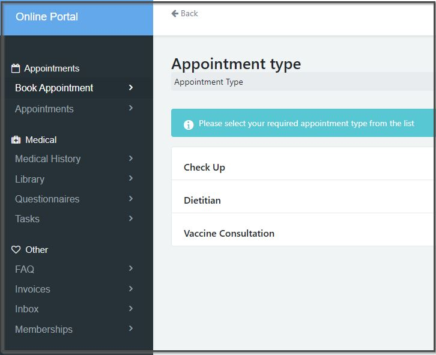
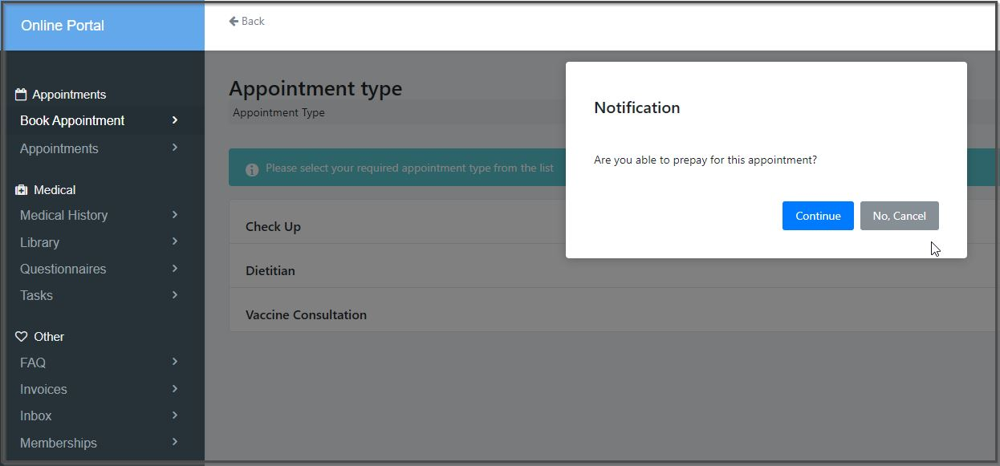
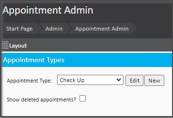
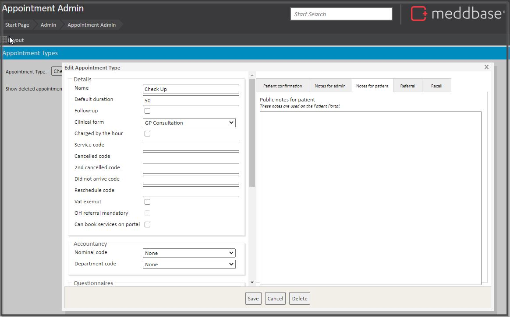
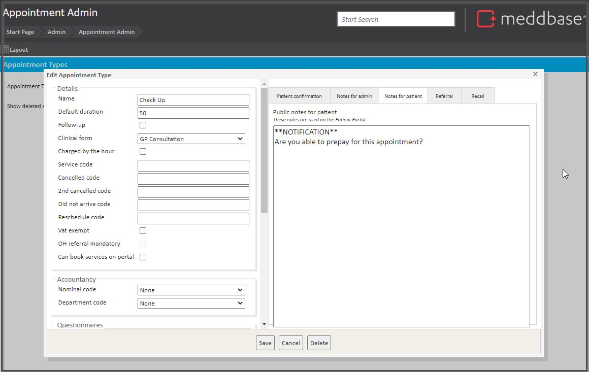
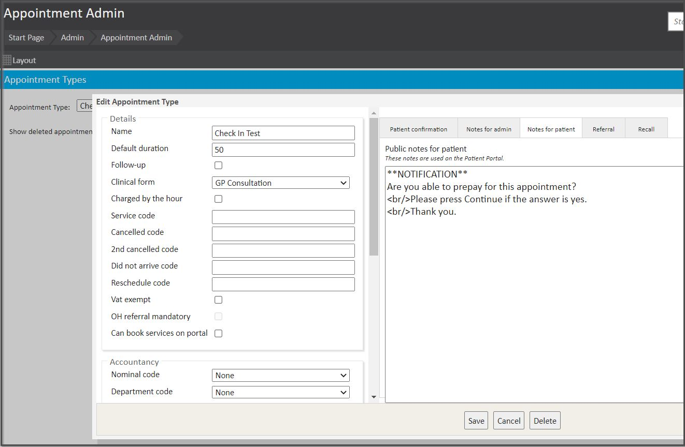
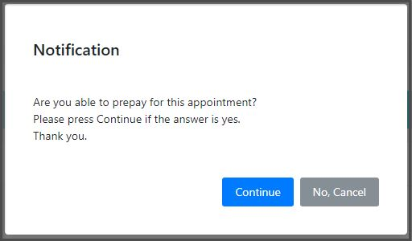
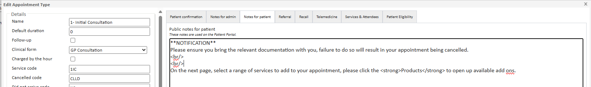
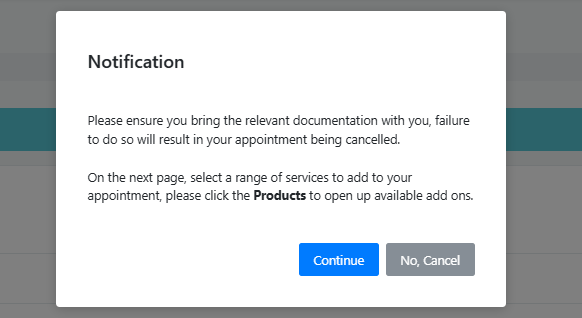

This article shows what a pop-up looks like on an appointment booking in the Patient Portal. It also has instructions on how to set up a pop-up for appointments.
When an Appointment Type is configured to display a patient-facing booking pop-up, in the context of login and appointment booking, it appears as shown below.


To configure a Pop-up:
1. Log into Meddbase.
2. On the Start Page click on Admin.
3. On the page that opens click on Appointment Admin.
4. The Appointment Types page appears.
5. Beside the words Appointment Type: click on the downward arrow and select the appointment type for which you would like to include a pop-up message within the Patient portal.

6. Click Edit.
7. In the Edit Appointment Type dialogue box that appears, on the right side of the box click on the tab titled Notes for patient.

8. In the blank box under Public notes for patient, type in **NOTIFICATION** on one line.
9. Then press Enter on your keyboard and type the question.

10. Click Save. You have now created a pop-up message for the user to see when they click on an appointment in the Patient Portal.
Continue and No, Cancel are the option buttons on the pop-up. These cannot be configured.
11. If you have a couple of sentences needed in the pop-up and you would like them to be on different lines you can add <br/> to the beginning of the sentence you would like on the next line.

Here is the result:

If you wish to have double spacing between lines of text, add <br/> <br/> on 2 lines.

